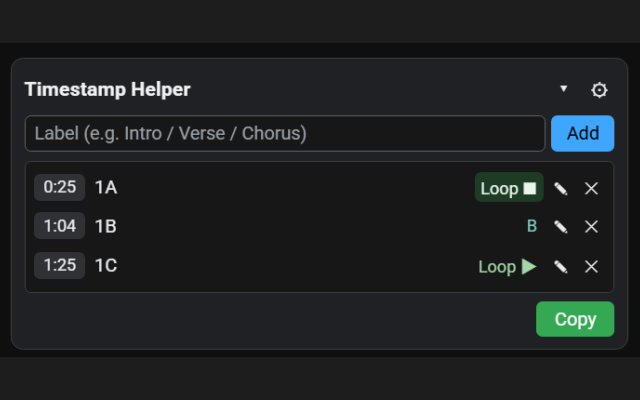

YouTubeの気になる場面に、
名前付きのタイムスタンプを残せるChrome拡張
名前付きのタイムスタンプを残せるChrome拡張
「このAメロだけ何度も聴きたい」「サビだけループしたい」──
そんなときに、動画の中に自分専用のしおりを挟むようにタイムスタンプを追加できます。
YouTube専用
タイムスタンプにラベルを付与
ループ再生に対応
※ 現在はベータ版です。今後のアップデートでUIや仕様が変更される可能性があります。

実際の拡張機能UI。タイムスタンプごとにラベルとループ設定ができます。
主な機能
音楽・講義・配信など、何度も見返したい場面を効率よく管理するための機能をシンプルにまとめています。
タイムスタンプをワンクリックで追加
YouTubeの動画プレイヤーを開いた状態で、拡張のUIから現在の再生位置にタイムスタンプを追加できます。
「0:25 / 1A」のように、ラベルを付けて管理可能です。
「0:25 / 1A」のように、ラベルを付けて管理可能です。
ラベルでわかりやすく整理
「Intro」「Aメロ」「サビ」「ソロ」など、任意のラベルを付けておくことで、あとから見返すときに迷いません。
テキストはいつでも編集できます。
テキストはいつでも編集できます。
ループ再生で集中して聴き込める
タイムスタンプ単位でループ再生のオン・オフを切り替えられます。
フレーズのコピー練習や耳コピ、語学学習などに便利です。
フレーズのコピー練習や耳コピ、語学学習などに便利です。
タイムスタンプのコピー機能
登録したタイムスタンプを、まとめてテキストとしてコピーできます。
メモアプリやYouTubeの概要欄、チャット欄などへの共有に使えます。
メモアプリやYouTubeの概要欄、チャット欄などへの共有に使えます。
使い方
インストール後は、YouTubeを開いて拡張アイコンからパネルを表示するだけ。複雑な設定は不要です。
1. Chromeに拡張機能を追加
Chrome Web Storeの「Chromeに追加」ボタンからインストールします。
ピン留めしておくと、いつでもワンクリックで開けます。
ピン留めしておくと、いつでもワンクリックで開けます。
2. 見返したい位置でタイムスタンプを追加
YouTubeの動画を再生しながら、拡張のパネルでラベルを入力して「Add」を押すと、その瞬間にタイムスタンプが追加されます。
3. ループや削除でリストを整理
各タイムスタンプの「Loop」ボタンでループ再生を切り替えたり、不要になったものは削除したりして、リストを整理できます。